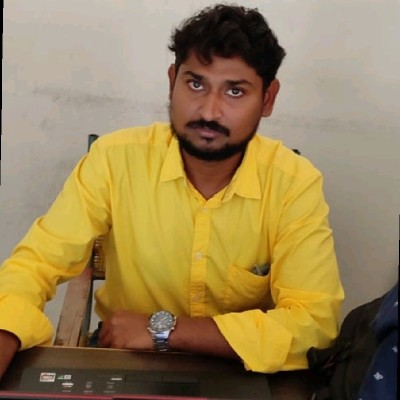

Notification
Action completed successfully.
Associate Professor • Department of Electronics and Communication Engineering
Chennai Institute of Technology, Chennai (November 2026 – Present)
Professor and academic administrator with 19.5+ years of cumulative experience across teaching, funded research, industry, academic leadership, and institutional administration, including over seven years of post-Ph.D. academic service. Principal Investigator of a DST, Government of India-funded project valued at ₹28.89 Lakhs, with 20 SCI/SCIE and Scopus-indexed publications spanning Wireless Sensor Networks, IoT, Machine Learning, Embedded Systems, Cyber-Security, Robotics, and Intelligent Systems.
Verified Scholarly Identifiers & Repositories

Tip: Place your yellow-shirt portrait as profile.jpg in the same folder as index.html on GitHub Pages.
476
Total Scholarly Citations
9 | 9
h-index: 9 • i10-index: 9
20
SCI / WoS Indexed Journals
₹29.14 L
DST Grant & Consultancy
Over nineteen years of progressive academic, research governance, accreditation (NAAC/NBA/UGC), and institutional administration experience.
Chennai Institute of Technology, Kundrathur, Chennai, Tamil Nadu
Conducting core undergraduate and postgraduate academic teaching, supervising research scholars, and contributing to departmental curriculum development and laboratory innovation in embedded systems and wireless communications.
KVILL University, Tamil Nadu
Led comprehensive academic, research, and administrative operations of the department; coordinated NBA accreditation documentation, student placement readiness, faculty workload allocation, and holistic student technical development.
Koneru Lakshmaiah Education Foundation (KLEF), Vijayawada, Andhra Pradesh
Directed industry-recognized global certification programs for over 3,200+ students; coordinated NAAC and NBA accreditation documentation; managed course coordination, outcome-based education (OBE) attainment, Skillathons, Faculty Development Programs (FDPs), and technical seminars.
Audisankara Group of Institutions, Gudur, Andhra Pradesh
Spearheaded institutional funded-project proposals, SCI/Scopus research publication drives, industrial consultancy engagements, departmental research targets, workshops, and regulatory NAAC, NBA, and UGC compliance documentation.
GRT Institute of Engineering and Technology, Tiruthani, Tamil Nadu
Delivered undergraduate engineering courses, mentored student project teams, organized industrial visits and national conferences, coordinated campus placements, and prepared NBA accreditation files.
VSB Engineering College, Karur, Tamil Nadu
Handled undergraduate lecture courses and practical laboratory instruction in Computer Networks and Electronic Circuits.
Principal Investigator and Consultant for sponsored hardware-software R&D initiatives totaling ₹29,14,037.
Technology Interventions for Disabled and Elderly (TIDE) initiative focused on non-invasive wireless moisture sensing, low-power embedded telemetry, and real-time caregiver alerting to enhance geriatric healthcare dignity and hygiene.
Design and validation of an Enhanced Elliptic Curve Cryptography and Software-Defined Networking (EsECC_SDN) intrusion detection and attack classification framework tailored for Mobile Ad-Hoc Networks (MANETs).
Comprehensive catalog of 20 SCI/WoS & Scopus-indexed journal articles, authored textbooks, Wiley book chapters, and international conference presentations.
Role: Book Author • Scientific International Publishing House
Comprehensive practical guide covering modern analytical visualization methodologies, exploratory data storytelling, and engineering dataset interpretation.
In: Simulation and Analysis of Mathematical Methods in Real-Time Engineering Applications • John Wiley & Sons
Examines deep neural architectures and mathematical modeling frameworks for automated cyber-threat detection and forensic analysis in real-time engineering networks.
25+
Peer-reviewed research papers presented at IEEE, Springer, and international engineering symposiums on WSNs, IoT security, MIMO systems, and embedded control.
10+
Completed and coordinated AICTE/ATAL and institutional FDPs in emerging electronics, machine learning, outcome-based education, and research methodology.
3+
Delivered invited plenary talks and technical sessions at national conferences, technical symposiums, and engineering workshops.
Anna University, Chennai, Tamil Nadu
Anna University, Chennai, Tamil Nadu
Anna University, Chennai, Tamil Nadu
Registered Independent Director with the Ministry of Corporate Affairs (MCA), Government of India, qualified for corporate board governance, audit oversight, and strategic advisory.
Active technical manuscript reviewer for flagship journals and conferences published by IEEE, Springer, Elsevier, Taylor & Francis, and Wiley.